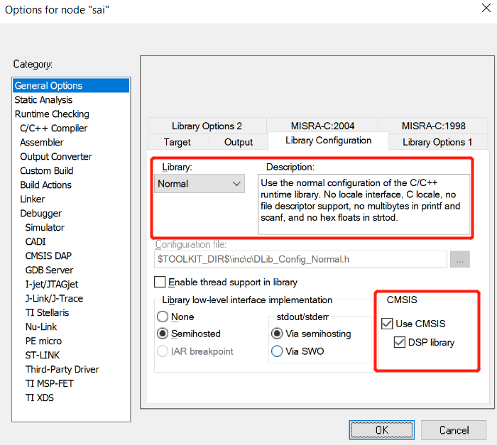

How to use CMSIS DSP library for toolchains
Introduction
CMSIS-DSP library is a rich collection of DSP functions that Arm has optimized for the various Cortex-M processor cores. CMSIS-DSP is widely used in the industry and enables also optimized C code generation from various third-party tools.
The library is divided into a number of functions each covering a specific category:
Basic math functions
Fast math functions
Complex math functions
Filters
Matrix functions
Transforms
Motor control functions
Statistical functions
Support functions
Interpolation functions
The library has separate functions for operating on 8-bit integers, 16-bit integers, 32-bit integer and 32-bit floating-point values.
Using the Library
The library installer contains pre-built versions of the libraries in the Lib folder.
arm_cortexM7lfdp_math.lib (Cortex-M7, Little endian, Double Precision Floating Point Unit)
arm_cortexM7bfdp_math.lib (Cortex-M7, Big endian, Double Precision Floating Point Unit)
arm_cortexM7lfsp_math.lib (Cortex-M7, Little endian, Single Precision Floating Point Unit)
arm_cortexM7bfsp_math.lib (Cortex-M7, Big endian and Single Precision Floating Point Unit on)
arm_cortexM7l_math.lib (Cortex-M7, Little endian)
arm_cortexM7b_math.lib (Cortex-M7, Big endian)
arm_cortexM4lf_math.lib (Cortex-M4, Little endian, Floating Point Unit)
arm_cortexM4bf_math.lib (Cortex-M4, Big endian, Floating Point Unit)
arm_cortexM4l_math.lib (Cortex-M4, Little endian)
arm_cortexM4b_math.lib (Cortex-M4, Big endian)
arm_cortexM3l_math.lib (Cortex-M3, Little endian)
arm_cortexM3b_math.lib (Cortex-M3, Big endian)
arm_cortexM0l_math.lib (Cortex-M0 / Cortex-M0+, Little endian)
arm_cortexM0b_math.lib (Cortex-M0 / Cortex-M0+, Big endian)
arm_ARMv8MBLl_math.lib (Armv8-M Baseline, Little endian)
arm_ARMv8MMLl_math.lib (Armv8-M Mainline, Little endian)
arm_ARMv8MMLlfsp_math.lib (Armv8-M Mainline, Little endian, Single Precision Floating Point Unit)
arm_ARMv8MMLld_math.lib (Armv8-M Mainline, Little endian, DSP instructions)
arm_ARMv8MMLldfsp_math.lib (Armv8-M Mainline, Little endian, DSP instructions, Single Precision Floating Point Unit)
The library functions are declared in the public file arm_math.h, which is placed in the Include folder. Simply include this file and link the appropriate library in the application and begin calling the library functions. The Library supports single public header file arm_math.h for Cortex-M cores with little endian and big endian. Same header file will be used for floating point unit(FPU) variants. Define the appropriate preprocessor macro ARM_MATH_CM7 or ARM_MATH_CM4 or ARM_MATH_CM3 or ARM_MATH_CM0 or ARM_MATH_CM0PLUS depending on the target processor in the application. For Armv8-M cores define preprocessor macro ARM_MATH_ARMV8MBL or ARM_MATH_ARMV8MML. Set preprocessor macro __DSP_PRESENT if Armv8-M Mainline core supports DSP instructions.
Potential Issues
There is a warning occurs in CMSIS/DSP_Lib/Source/TransformFunctions/arm_cfft_radix4_q31.c: In function 'arm_radix4_butterfly_q31'.
Warning: dereferencing type-punned pointer will break strict-aliasing rules [-Wstrict-aliasing] xaya = *_SIMD64(ptr1)+;
This function to be called only in hexiware_heartrate project use this function to do FFT, which including source code file directly not the library, which like ../../CMSIS/Lib/GCC/libarm_cortexM4lf_math.a, generated by ARM 's project using GCC compiler.
Reasons
The reason why this warning occurs is that GCC project ignore those warnings directly during the library generation process and we didn't use the parameter, -fno-strict-aliasing, to ignore those warnings in our GCC project, so we can add this parameter, -fno-strict-aliasing, to ignore it, and ARM gives a suggestion to fix those warnings but this resolution will not be added into the official release version.
Now ARM CMSIS official release version is 5.4 and ours is 5.3, we can update it in next SDK release, but this update would not fix those warnings, and ARM's suggestion is that users should use official library throuth include arm_math.h with library , not with the original source code.
Resolution
Simply include this file, arm_math.h, and link the appropriate library in the application and begin calling the library functions.
How to make a project to including specific CMSIS DSP library
Our project is generated by ruby generator, so need to configure yml file to include a specific CMSIS DSP library.
Setting Steps
CMSIS DSP library yml setting in
C:\nxp_ksdk\mcu-sdk-2.0\CMSIS\CMSIS.yml.Yml support three toolchains to require,
MDK/ARMGCC/MCUX, withoutIAR.CMSIS_DSP_Lib.arm_cortexM4lf_math: section-type: component meta-name: platform.CMSIS_DSP_Lib.arm_cortexM4lf_math contents: files: - source: CMSIS/Lib/ARM/arm_cortexM4lf_math.lib virtual-dir: libs toolchains: mdk attribute: extra-libraries - source: CMSIS/Lib/GCC/libarm_cortexM4lf_math.a virtual-dir: libs toolchains: armgcc kds mcux attribute: extra-libraries __requires__: - CMSIS_DSP_Lib.ui_control cmsis.core_cm4f.support component_info: common: type: CMSIS_driver version: 1.5.2 cmsis_pack: class: CMSIS pack_name: CMSIS group: DSP pack_url: http://www.keil.com/pack/ pack_vendor: ARM pack_version: 5.3.0IAR toolchain need use default library in IAR toolchain install path,
C:\Program Files (x86)\IARSystems\Embedded Workbench 8.1\arm\CMSIS\Lib\IAR\iar_cortexM4lf_math.a, named with prefixiar_.Calling process for CMSIS yml
- Specific SOC yml load specific SOC component yml.
- Specific SOC component yml load others yml.
- Others yml load CMSIS yml
Examples
SAI project as example in platform twrk80f150m.
GCC/MDK/MCUX
- Add required CMSIS DSP library, which named
CMSIS_DSP_Lib.arm_cortexM4lf_mathinCMSIS.yml, into SAI requires section for twrk80f150m.yml inC:\nxp_ksdk\mcu-sdk-2.0\bin\generator\records_v1\msdk\projects\sdk_example\twrk80f150m.yml.
__requires__:
- driver.i2c driver.sgtl5000 CMSIS_DSP_Lib.arm_cortexM4lf_math
- Build SAI project with
GCCcompiler and will link the specific CMSIS DSP library,libarm_cortexM4lf_math.a, into CMakelist.txt.
link_directories(${ProjDirPath}/../../../../../CMSIS/Lib/GCC)
target_link_libraries(sai.elf debug ${ProjDirPath}/../../../../../CMSIS/Lib/GCC/libarm_cortexM4lf_math.a)
link_directories(${ProjDirPath}/../../../../../CMSIS/Lib/GCC)
target_link_libraries(sai.elf optimized ${ProjDirPath}/../../../../../CMSIS/Lib/GCC/libarm_cortexM4lf_math.a)
IAR
- Use library directly in IAR toolchain install path, IAR will select right CMSIS DSP library based on device type, based on ARM core.
- Use cc-flags parameter,
--use_cmsis_dsp, to check CMSIS DSP library for specific examples in hierarchy. such as SAI inC:\nxp_ksdk\mcu-sdk-2.0\bin\generator\records\msdk\projects\sdk_example\common\kinetis\demo_app.yml.
sai:
configuration:
tools:
__common__:
libraries:
include:
config:
__common__:
cc-include:
- path: boards/src/demo_apps/sai
release-dir: boards/${board}/demo_apps/sai/${multicore_foldername}
- path: boards/${board}/demo_apps/sai/${multicore_foldername}
cc-define:
PRINTF_FLOAT_ENABLE=1:
iar:
config:
__common__:
cc-flags:
- "--use_cmsis_dsp"
Open project option and can see checked CMSIS DSP library.

Will include CMSIS DSP library,
"C:\Program Files (x86)\IARSystems\Embedded Workbench 8.1\arm\CMSIS\Lib\IAR\iar_cortexM4lf_math.a", in final map file.